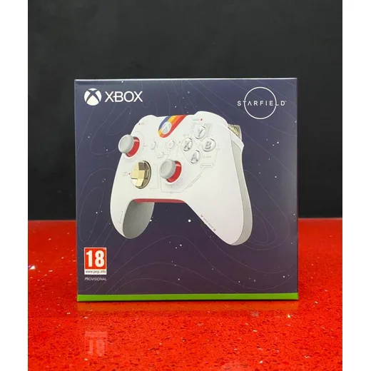
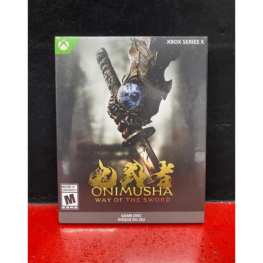
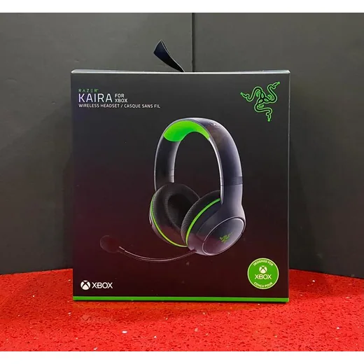
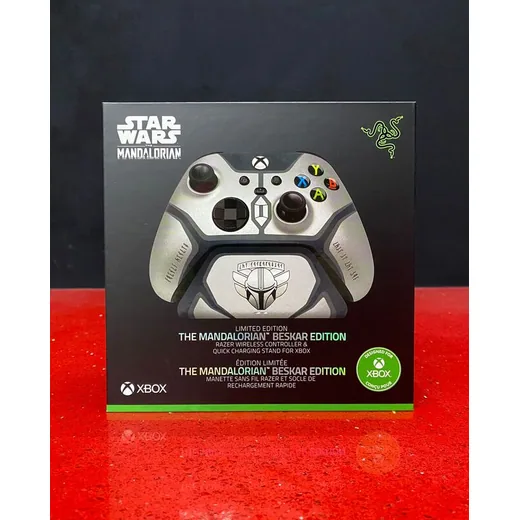
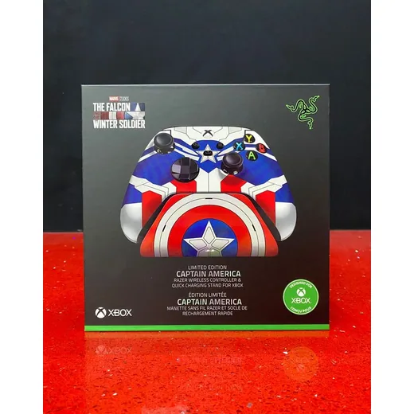
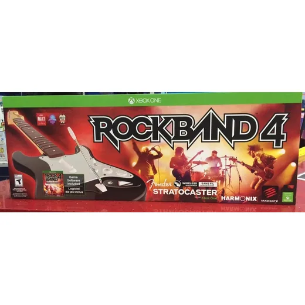
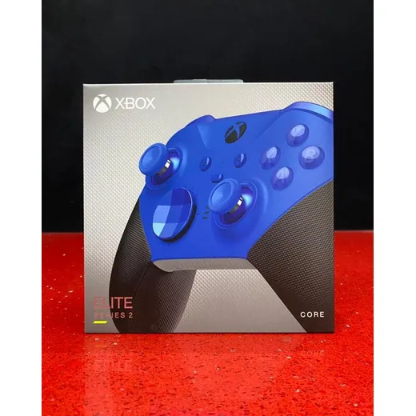
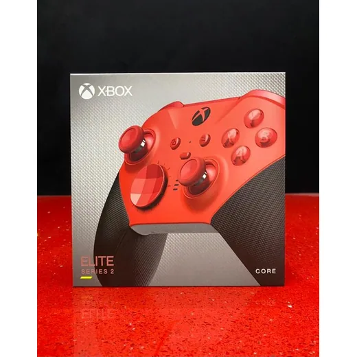
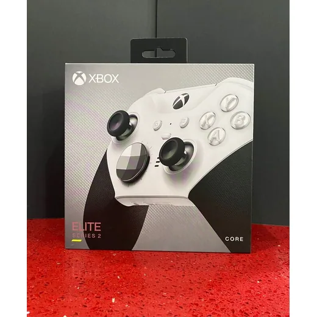

Precio en cada tienda
| Tienda | Precio | Antes | Disponibilidad | |
|---|---|---|---|---|
| Game Station | L 2,200 | — | Disponible | Ver en tienda › |
Precios referenciales tomados de cada tienda el 14 de noviembre de 2026. El precio válido es el que muestra la tienda al comprar.
Otros juegos y controles Xbox

XBOX Onimusha Way of the SwordL 2,100En Game Station
XBOX Headset Auricular Inalambrico Kaira RazerL 2,400En Game Station
XBOX Control Inalambrico The Mandalorian RazerL 2,400En Game Station
XBOX Control Inalambrico Captain America RazerL 2,400En Game Station
Xbox One RockBand 4 con GuitarraL 2,000En Game Station
XBOX Control Inalambrico ELITE Series 2 Core AzulL 2,500En Game Station
XBOX Control Inalambrico ELITE Series 2 Core RojoL 2,500En Game Station
XBOX Control Inalambrico ELITE Series 2 CORE Blanco MicrosoftL 2,500En Game Station